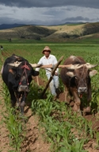
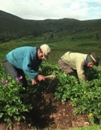

Conociendo Cajamarca
Echa un vistazo a las actividades del departamento
arando el campo
produccion de papa
Pasar el cursor sobre la imagen para leer informacion
-
Plaza
De CajamarcaCajamarca, fundada como San Antonio de Cajamarca, es la ciudad mas importante de la sierra norte del Peru, capital de la provincia y del departamento de Cajamarca. Esta situada a 2750 msnm en la margen este de la cadena oriental de la Cordillera de los Andes, en el valle interandino que forman los rios Mashcon y Chonta. En 1532 se produjo en este lugar la captura del inca Atahualpa durante la conquista del Perú. En la época de la colonia mantuvo su categoría de villa hasta el 19 de diciembre de 1802, poco antes de la independencia cuando empezó a ser considerada ciudad y recibió su escudo de armas.